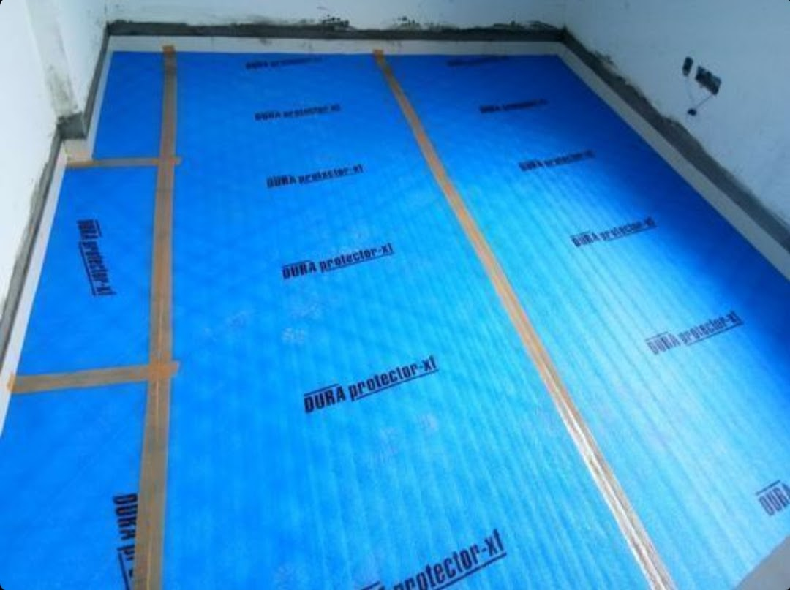
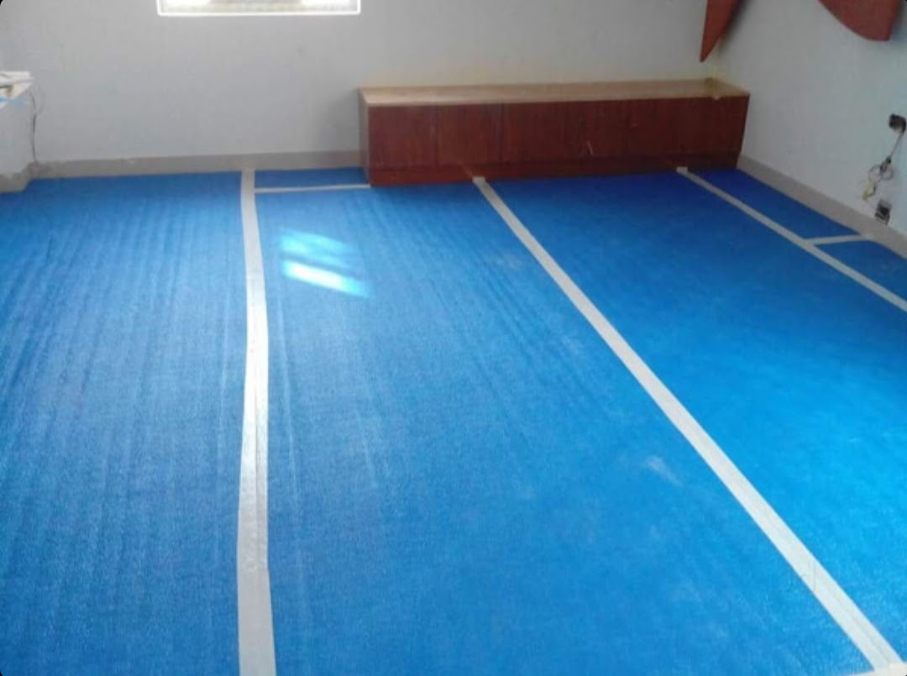
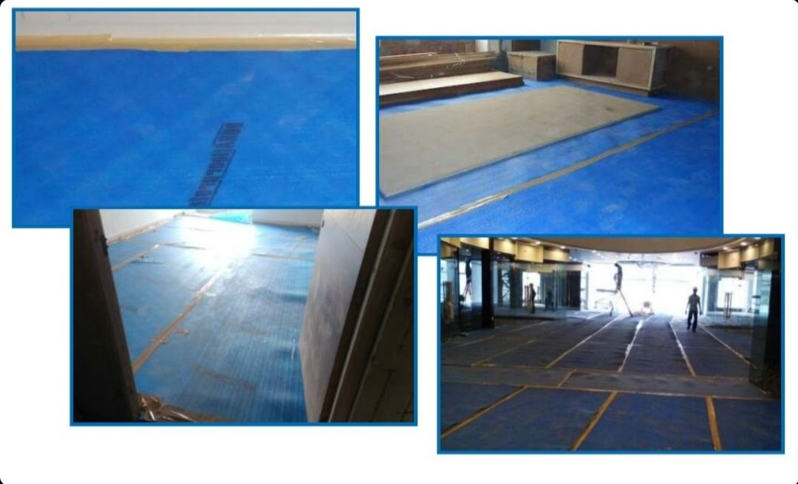
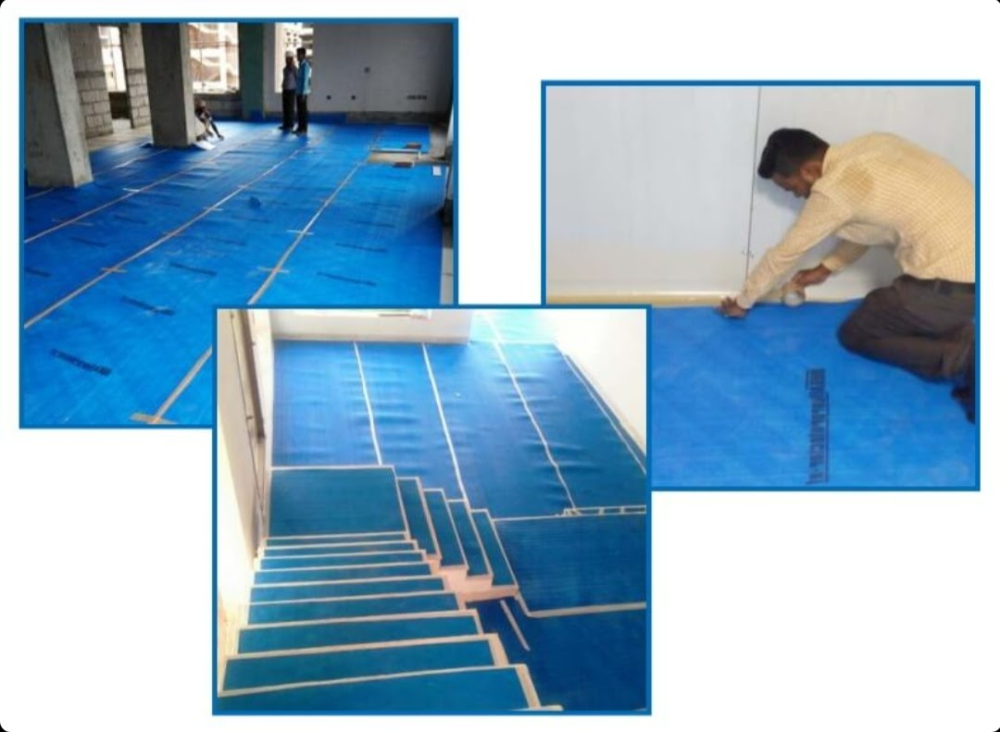
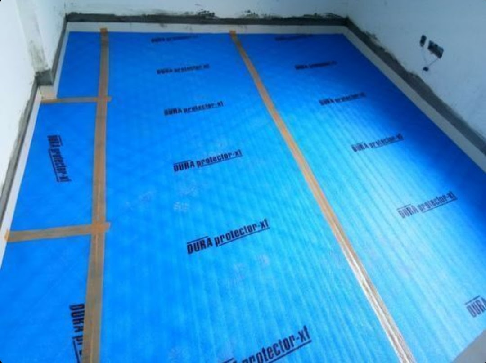
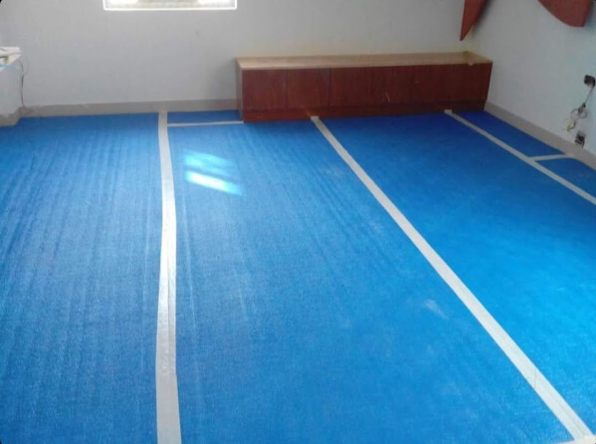
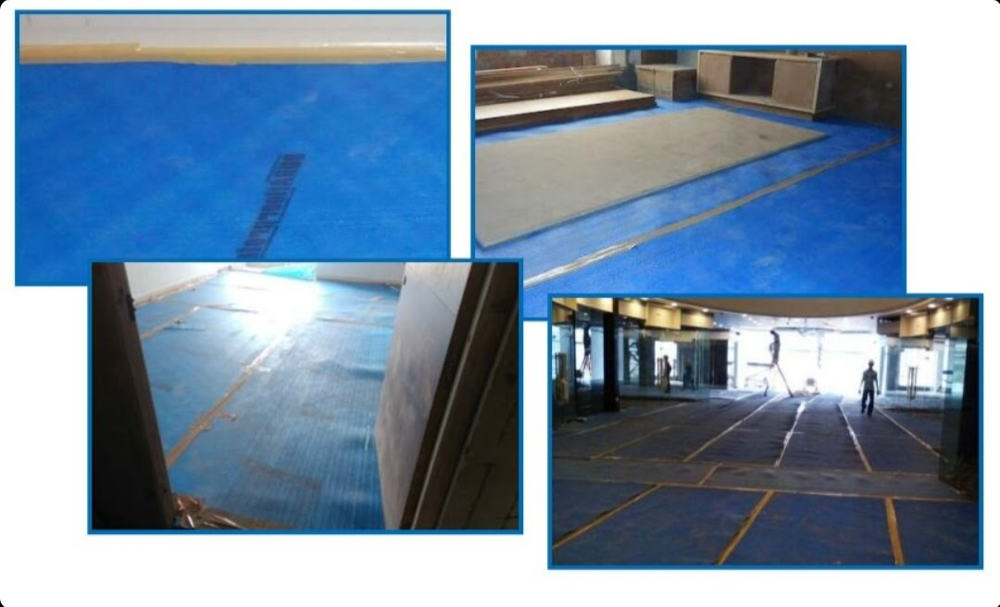
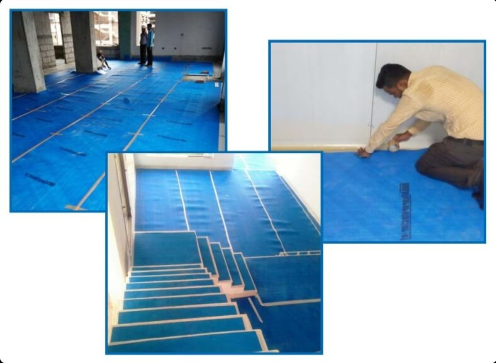

Product Overview
Floor Protection Sheets are used to protect finished surfaces
such as tiles, marble, wood, and concrete from dust, paint,
scratches, and accidental spills during construction and
renovation activities.
These sheets are lightweight, durable, and easy to install,
making them ideal for short-term and long-term surface protection
across residential, commercial, and industrial projects.
Key Features
- Protects floors from dust, paint, and debris
- Helps prevent scratches and surface damage
- Lightweight and easy to handle
- Durable material for extended use
- Suitable for multiple floor types
Specifications
- Material: Plastic / Polyethylene Sheet
- Usage: Temporary floor protection
- Thickness: Varies as per requirement
- Colour: Transparent / Semi-transparent
- Application: Indoor and covered outdoor areas
Applications & Use Cases
- Construction and renovation sites
- Painting and polishing work
- Residential and commercial flooring protection
- Offices, malls, and showrooms
- Maintenance and repair activities
Best Suited For
- Interior contractors and painting teams
- Renovation projects with finished flooring
- Sites requiring temporary but reliable surface protection
Selection Note
For Indian work sites, thicker sheets are recommended where
heavy foot traffic, ladders, or tools are involved. Proper
edge taping helps prevent sheet movement during active work.
Commonly Used Along With
- BOPP Packing Tapes for edge fixing
- Protective Drop Sheets for vertical surfaces
- Disposable Cleaning Cloths for post-work cleanup
Product FAQs
-
Is floor protection sheet suitable for marble and wooden floors?
Yes. These sheets are widely used to protect marble, tiles, and wooden floors
from scratches, dust, and paint during interior work.
-
Which thickness should be selected for construction sites?
Thicker sheets are recommended for Indian construction sites where
foot traffic, tools, and ladders are frequently used.
-
Can floor protection sheets be reused?
Yes. If handled carefully and not torn, the sheets can be reused
across multiple jobs depending on site conditions.
-
Are these sheets waterproof?
Floor protection sheets resist water and paint spills, helping
prevent damage to finished flooring surfaces.
-
How are the sheets fixed in place during work?
Sheets are commonly fixed using packing tape along edges to
prevent movement during active construction or painting work.
-
Are bulk quantities available for contractors?
Yes. Bulk supply is available for interior contractors,
builders, and large renovation projects.

 






